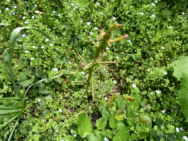
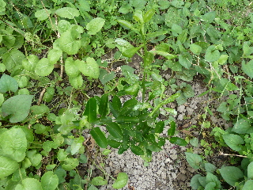
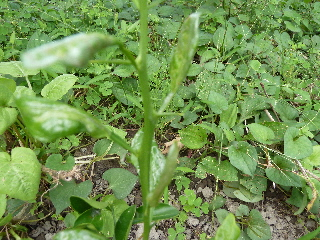
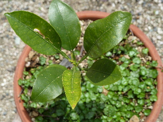
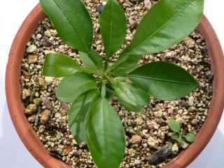

ポンカンの葉がなくなっていました。
2012/04/21
ポンカンの葉がなくなって、トゲだけになっていました。

これってピンチですかね？枯れちゃう？
全部虫にたべられちゃったのかなー？
こんなことになるんだったら地植えにしなきゃ良かったかも？
今の木の高さは40センチくらいです。
ひょろひょろってしていて、弱そうに見えます。
これから暖かい季節になって、成長してくれるといいんですが。
2012/04/21
ポンカンの葉がなくなって、トゲだけになっていました。

これってピンチですかね？枯れちゃう？
全部虫にたべられちゃったのかなー？
こんなことになるんだったら地植えにしなきゃ良かったかも？
今の木の高さは40センチくらいです。
ひょろひょろってしていて、弱そうに見えます。
これから暖かい季節になって、成長してくれるといいんですが。
2011/09/10
育つもんですね。
葉っぱが大分増えました。

まだ気温も高いですので、冬がくるまでもっと大きくなって欲しいですね。

ハッサクも育てているんですが、それにもありましたが、このポンカンにもトゲが出来ていました。
2011/05/04
なんて名前か知らないですが、ポンカンの鉢に雑草で緑のジュウタンが出来てちょっと綺麗になりました。

ポンカンはあまり変化はないですね。
2011/03/12
葉っぱが薄くて、ひょろひょろっとした感じがするポンカンですが、冬の寒さで枯れずに春を迎えることが出来ました。

一番新しい芽は寒さにやられたのか、茶色くて小さいままになっています。
新しい芽が早く出てきて欲しいです。
2010/10/23
大きくなるもんですね。いっしょに蒔いたハッサクよりはだいぶ小さいですけど、元気に育っています。
葉っぱが今16枚あります。
まだまだ小さいですけど、最初の年でこんなに葉っぱが出るとは思っていませんでした。
このペースでドンドン大きくなって欲しいです。
緑が綺麗なので、もうちょっと大きくなると観葉植物としてもいいかもしれません。
畑仕事じゃないよ。